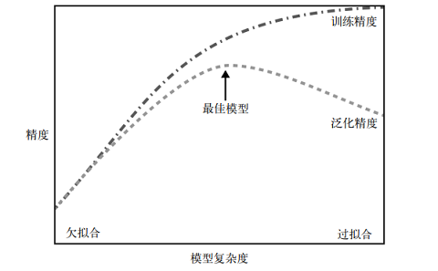
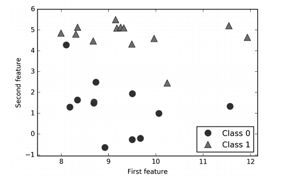
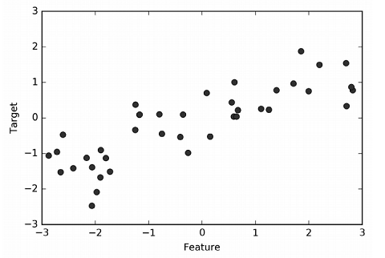
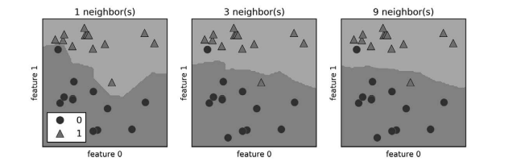
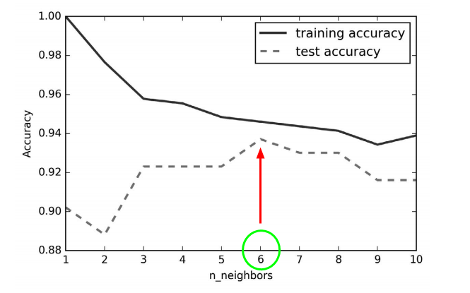

 <!DOCTYPE HTML>
<html lang="zh-CN">
<head><meta name="generator" content="Hexo 3.8.0">
  <meta charset="UTF-8">
  
    <title>Python机器学习基础教程（2）:监督学习初步及K近邻算法 | 成华的个人博客</title>
    <meta name="viewport" content="width=device-width, initial-scale=1,user-scalable=no">
    
    <meta name="author" content="Cheng Hua">
    

    
    <meta name="description" content="mglearn库下载地址：https://github.com/amueller/introduction_to_ml_with_python">
<meta name="keywords" content="machine-learning">
<meta property="og:type" content="article">
<meta property="og:title" content="Python机器学习基础教程（2）:监督学习初步及K近邻算法">
<meta property="og:url" content="http://dayAndnight2018.github.io/2019/02/14/2019021401/index.html">
<meta property="og:site_name" content="成华的个人博客">
<meta property="og:description" content="mglearn库下载地址：https://github.com/amueller/introduction_to_ml_with_python">
<meta property="og:locale" content="zh-CN">
<meta property="og:image" content="http://dayandnight2018.github.io/2019/02/14/2019021401/2019021401_模型复杂度.png">
<meta property="og:image" content="http://dayandnight2018.github.io/2019/02/14/2019021401/forge数据集.png">
<meta property="og:image" content="http://dayandnight2018.github.io/2019/02/14/2019021401/wave数据集.png">
<meta property="og:image" content="http://dayandnight2018.github.io/2019/02/14/2019021401/决策边界.png">
<meta property="og:image" content="http://dayandnight2018.github.io/2019/02/14/2019021401/确定K值.png">
<meta property="og:updated_time" content="2019-02-14T12:43:22.670Z">
<meta name="twitter:card" content="summary">
<meta name="twitter:title" content="Python机器学习基础教程（2）:监督学习初步及K近邻算法">
<meta name="twitter:description" content="mglearn库下载地址：https://github.com/amueller/introduction_to_ml_with_python">
<meta name="twitter:image" content="http://dayandnight2018.github.io/2019/02/14/2019021401/2019021401_模型复杂度.png">

    
    <link rel="alternative" href="/atom.xml" title="成华的个人博客" type="application/atom+xml">
    
    
    <link rel="icon" href="/img/favicon.ico">
    
    
    <link rel="apple-touch-icon" href="/img/jacman.jpg">
    <link rel="apple-touch-icon-precomposed" href="/img/jacman.jpg">
    
    <link rel="stylesheet" href="/css/style.css">
</head>
</html>
  <body>
    <header>
      
<div>
		
			<div id="imglogo">
				<a href="/"></a>
			</div>
			
			<div id="textlogo">
				<h1 class="site-name"><a href="/" title="成华的个人博客">成华的个人博客</a></h1>
				<h2 class="blog-motto">爱生活，爱编程</h2>
			</div>
			<div class="navbar"><a class="navbutton navmobile" href="#" title="菜单">
			</a></div>
			<nav class="animated">
				<ul>
					<ul>
					 
						<li><a href="/">首页</a></li>
					
						<li><a href="/archives">归档</a></li>
					
						<li><a href="/tags">标签</a></li>
					
						<li><a href="/categories">分类</a></li>
					
					<li>
 					
					<form class="search" action="//google.com/search" method="get" accept-charset="utf-8">
						<label>Search</label>
						<input type="search" id="search" name="q" autocomplete="off" maxlength="20" placeholder="搜索">
						<input type="hidden" name="q" value="site:dayAndnight2018.github.io">
					</form>
					
					</li>
				</ul>
			</ul></nav>			
</div>
    </header>
    <div id="container">
      <div id="main" class="post" itemscope="" itemprop="blogPost">
  
	<article itemprop="articleBody"> 
		<header class="article-info clearfix">
  <h1 itemprop="name">
    
      <a href="/2019/02/14/2019021401/" title="Python机器学习基础教程（2）:监督学习初步及K近邻算法" itemprop="url">Python机器学习基础教程（2）:监督学习初步及K近邻算法</a>
  </h1>
  <p class="article-author">By
       
		<a href="/about" title="Cheng Hua" target="_blank" itemprop="author">Cheng Hua</a>
		
  </p><p class="article-time">
    <time datetime="2019-02-14T10:08:26.000Z" itemprop="datePublished"> 发表于 2019-02-14</time>
    
  </p>
</header>
	<div class="article-content">
		
		<p>mglearn库下载地址：<a href="https://github.com/amueller/introduction_to_ml_with_python" target="_blank" rel="noopener">https://github.com/amueller/introduction_to_ml_with_python</a><br><a id="more"></a></p>
<blockquote>
<h2 id="何时使用监督学习？"><a href="#何时使用监督学习？" class="headerlink" title="何时使用监督学习？"></a>何时使用监督学习？</h2></blockquote>
<p>每当想要根据给定输入预测某个结果，并且还有输入 / 输出对的示例时，都应该使用监督学习。这些输入 / 输出对构成了训练集，我们利用它来构建机器学习模型。我们的目标是对从未见过的新数据做出准确预测。</p>

<blockquote>
<h2 id="分类与回归"><a href="#分类与回归" class="headerlink" title="分类与回归"></a>分类与回归</h2></blockquote>
<p><code>分类</code>:对事物的类别进行确定。通常情况下，所有可能的类别是事先确知的。</p>
<div style="background:lightyellow;padding:5px 10px;">通常将类别只有两种情况的分类称为<b>二分类问题</b>，将类别有多种情况的分类称为<b>多分类问题</b>。<br>二分类问题中，我们把其中一类称为<b>“正类”</b>，另一类称为<b>“反类”</b></div>

<p><code>回归</code>:对某种连续值的预测。根据教育水平、年龄和居住地来预测一个人的年收入，这就是回归的一个例子。</p>
<blockquote>
<h2 id="泛化、-过拟合与欠拟合"><a href="#泛化、-过拟合与欠拟合" class="headerlink" title="泛化、 过拟合与欠拟合"></a>泛化、 过拟合与欠拟合</h2></blockquote>
<p>在监督学习中，我们想要在训练数据上构建模型，然后能够对没见过的新数据（这些新数据与训练集具有相同的特性）做出准确预测，这种能力就叫<code>泛化能力</code>。</p>
<p>构建一个对现有信息量来说过于复杂的模型，这被称为<code>过拟合（overfitting）</code>。如果你在拟合模型时过分关注训练集的细节，得到了一个在训练集上表现很好、但不能泛化到新数据上的模型，那么就存在过拟合。</p>
<p>与之相反，如果你的模型过于简单——那么你可能无法抓住数据的全部内容以及数据中的变化，你的模型甚至在训练集上的表现就很差。选择过于简单的模型被称为<code>欠拟合（underfitting）</code>。</p>
<p></p>
<div style="background:lightyellow;padding:5px 10px;">简言之，过拟合就是模型过多的吸收了训练集数据的特征，导致在测试集上的表现较差。欠拟合就是模型没有很好的吸收训练集上的数据特征，导致模型比较稚嫩，在测试集上也不能表现得很好。所以，过拟合与欠拟合实则是一对矛盾，我们要在其中间做到最佳：找到在测试集上表现最佳的那个模型。</div>

<p><strong>一般来说，数据量越大，数据点的变化范围越大，你所能得到的模型就会越复杂（前提是没有发生过拟合）。</strong></p>
<blockquote>
<h2 id="一些样本数据集"><a href="#一些样本数据集" class="headerlink" title="一些样本数据集"></a>一些样本数据集</h2></blockquote>
<p><strong>1. 用于模拟二分类问题的forge数据集</strong></p>
<figure class="highlight plain"><table><tr><td class="gutter"><pre><span class="line">1</span><br><span class="line">2</span><br><span class="line">3</span><br><span class="line">4</span><br><span class="line">5</span><br><span class="line">6</span><br><span class="line">7</span><br><span class="line">8</span><br><span class="line">9</span><br><span class="line">10</span><br><span class="line">11</span><br></pre></td><td class="code"><pre><span class="line"># 生成数据集</span><br><span class="line">X, y = mglearn.datasets.make_forge()</span><br><span class="line"># 数据集绘图</span><br><span class="line">mglearn.discrete_scatter(X[:, 0], X[:, 1], y)</span><br><span class="line">#设置角标</span><br><span class="line">plt.legend([&quot;Class 0&quot;, &quot;Class 1&quot;], loc=4)</span><br><span class="line">#设置横纵坐标轴名称</span><br><span class="line">plt.xlabel(&quot;First feature&quot;)</span><br><span class="line">plt.ylabel(&quot;Second feature&quot;)</span><br><span class="line">#获取数据大小</span><br><span class="line">print(&quot;X.shape: &#123;&#125;&quot;.format(X.shape))</span><br></pre></td></tr></table></figure>
<p><code>输出显示 &gt;&gt;</code></p>
<figure class="highlight plain"><table><tr><td class="gutter"><pre><span class="line">1</span><br></pre></td><td class="code"><pre><span class="line">X.shape: (26, 2)</span><br></pre></td></tr></table></figure>
<p></p>
<p><strong>2. 用于模拟回归问题的wave数据集</strong></p>
<figure class="highlight plain"><table><tr><td class="gutter"><pre><span class="line">1</span><br><span class="line">2</span><br><span class="line">3</span><br><span class="line">4</span><br><span class="line">5</span><br><span class="line">6</span><br><span class="line">7</span><br><span class="line">8</span><br><span class="line">9</span><br></pre></td><td class="code"><pre><span class="line">#获取数据集</span><br><span class="line">X, y = mglearn.datasets.make_wave(n_samples=40)</span><br><span class="line">#绘制图形</span><br><span class="line">plt.plot(X, y, &apos;o&apos;)</span><br><span class="line">#限制y轴范围</span><br><span class="line">plt.ylim(-3, 3)</span><br><span class="line">#设置横纵坐标轴名称</span><br><span class="line">plt.xlabel(&quot;Feature&quot;)</span><br><span class="line">plt.ylabel(&quot;Target&quot;)</span><br></pre></td></tr></table></figure>
<p><code>输出显示 &gt;&gt;</code></p>
<p></p>
<p><strong>3. 乳腺癌肿瘤数据集</strong></p>
<figure class="highlight plain"><table><tr><td class="gutter"><pre><span class="line">1</span><br><span class="line">2</span><br><span class="line">3</span><br><span class="line">4</span><br></pre></td><td class="code"><pre><span class="line">#获取数据集</span><br><span class="line">from sklearn.datasets import load_breast_cancer</span><br><span class="line">cancer = load_breast_cancer()</span><br><span class="line">print(&quot;cancer.keys(): \n&#123;&#125;&quot;.format(cancer.keys()))</span><br></pre></td></tr></table></figure>
<p><code>输出显示 &gt;&gt;</code></p>
<figure class="highlight plain"><table><tr><td class="gutter"><pre><span class="line">1</span><br><span class="line">2</span><br></pre></td><td class="code"><pre><span class="line">cancer.keys():</span><br><span class="line">dict_keys([&apos;feature_names&apos;, &apos;data&apos;, &apos;DESCR&apos;, &apos;target&apos;,&apos;target_names&apos;])</span><br></pre></td></tr></table></figure>
<figure class="highlight plain"><table><tr><td class="gutter"><pre><span class="line">1</span><br><span class="line">2</span><br></pre></td><td class="code"><pre><span class="line">#统计样本数量</span><br><span class="line">print(&quot;Sample counts per class:\n&#123;&#125;&quot;.format(&#123;n: v for n, v in zip(cancer.target_names, np.bincount(cancer.target))&#125;))</span><br></pre></td></tr></table></figure>
<p><code>输出显示 &gt;&gt;</code></p>
<figure class="highlight plain"><table><tr><td class="gutter"><pre><span class="line">1</span><br><span class="line">2</span><br></pre></td><td class="code"><pre><span class="line">Sample counts per class:</span><br><span class="line">&#123;&apos;benign&apos;: 357, &apos;malignant&apos;: 212&#125;</span><br></pre></td></tr></table></figure>
<p><strong>4. 波士顿房价数据集</strong></p>
<figure class="highlight plain"><table><tr><td class="gutter"><pre><span class="line">1</span><br><span class="line">2</span><br><span class="line">3</span><br><span class="line">4</span><br></pre></td><td class="code"><pre><span class="line">#获取数据集</span><br><span class="line">from sklearn.datasets import load_boston</span><br><span class="line">boston = load_boston()</span><br><span class="line">print(&quot;Data shape: &#123;&#125;&quot;.format(boston.data.shape))</span><br></pre></td></tr></table></figure>
<p><code>输出显示 &gt;&gt;</code></p>
<figure class="highlight plain"><table><tr><td class="gutter"><pre><span class="line">1</span><br></pre></td><td class="code"><pre><span class="line">Data shape: (506, 13)</span><br></pre></td></tr></table></figure>
<p>对特征之间两两乘积获取新的特征来扩展数据集（这也叫特征工程）</p>
<figure class="highlight plain"><table><tr><td class="gutter"><pre><span class="line">1</span><br><span class="line">2</span><br><span class="line">3</span><br></pre></td><td class="code"><pre><span class="line">#获取扩展数据集</span><br><span class="line">X, y = mglearn.datasets.load_extended_boston()</span><br><span class="line">print(&quot;X.shape: &#123;&#125;&quot;.format(X.shape))</span><br></pre></td></tr></table></figure>
<p><code>输出显示 &gt;&gt;</code></p>
<figure class="highlight plain"><table><tr><td class="gutter"><pre><span class="line">1</span><br></pre></td><td class="code"><pre><span class="line">X.shape: (506, 104)</span><br></pre></td></tr></table></figure>
<blockquote>
<h2 id="K近邻算法"><a href="#K近邻算法" class="headerlink" title="K近邻算法"></a>K近邻算法</h2></blockquote>
<p><code>最近邻</code>：找到与新数据点“距离”最近的数据点的类别，作为新数据点的类别。<br><code>K近邻</code>：找到与新数据点“距离”最近的K个点，根据他们的类别进行“投票”，哪个类别的数据居多，就把那个类别作为新数据点的类别。</p>
<p>应用Sci-learn进行K近邻算法做分类问题的一般步骤：</p>
<p><strong>1. 使用train_test_split函数将数据集划分成训练集和测试集，以便评估泛化性能。</strong></p>
<figure class="highlight plain"><table><tr><td class="gutter"><pre><span class="line">1</span><br><span class="line">2</span><br><span class="line">3</span><br></pre></td><td class="code"><pre><span class="line">from sklearn.model_selection import train_test_split</span><br><span class="line">X, y = mglearn.datasets.make_forge()</span><br><span class="line">X_train, X_test, y_train, y_test = train_test_split(X, y, random_state=0)</span><br></pre></td></tr></table></figure>
<p><strong>2. 引入KNN库，使用KNeighborsClassifier函数实例化KNN</strong></p>
<figure class="highlight plain"><table><tr><td class="gutter"><pre><span class="line">1</span><br><span class="line">2</span><br></pre></td><td class="code"><pre><span class="line">from sklearn.neighbors import KNeighborsClassifier</span><br><span class="line">clf = KNeighborsClassifier(n_neighbors=3)</span><br></pre></td></tr></table></figure>
<p><strong>3. 训练数据集,使用fit函数获得模型</strong></p>
<figure class="highlight plain"><table><tr><td class="gutter"><pre><span class="line">1</span><br></pre></td><td class="code"><pre><span class="line">clf.fit(X_train, y_train)</span><br></pre></td></tr></table></figure>
<p><strong>4. 根据模型，使用predict函数对测试集的数据进行预测</strong></p>
<figure class="highlight plain"><table><tr><td class="gutter"><pre><span class="line">1</span><br></pre></td><td class="code"><pre><span class="line">print(&quot;Test set predictions: &#123;&#125;&quot;.format(clf.predict(X_test)))</span><br></pre></td></tr></table></figure>
<p><code>输出显示 &gt;&gt;</code></p>
<figure class="highlight plain"><table><tr><td class="gutter"><pre><span class="line">1</span><br></pre></td><td class="code"><pre><span class="line">Test set predictions: [1 0 1 0 1 0 0]</span><br></pre></td></tr></table></figure>
<p><strong>5. 使用score函数判断分类性能</strong></p>
<figure class="highlight plain"><table><tr><td class="gutter"><pre><span class="line">1</span><br></pre></td><td class="code"><pre><span class="line">print(&quot;Test set accuracy: &#123;:.2f&#125;&quot;.format(clf.score(X_test, y_test)))</span><br></pre></td></tr></table></figure>
<p><code>输出显示 &gt;&gt;</code></p>
<figure class="highlight plain"><table><tr><td class="gutter"><pre><span class="line">1</span><br></pre></td><td class="code"><pre><span class="line">Test set accuracy: 0.86</span><br></pre></td></tr></table></figure>
<p><strong>6. 绘制决策边界（不同类别之间划分的边界线）</strong></p>
<figure class="highlight plain"><table><tr><td class="gutter"><pre><span class="line">1</span><br><span class="line">2</span><br><span class="line">3</span><br><span class="line">4</span><br><span class="line">5</span><br><span class="line">6</span><br><span class="line">7</span><br><span class="line">8</span><br><span class="line">9</span><br><span class="line">10</span><br></pre></td><td class="code"><pre><span class="line">fig, axes = plt.subplots(1, 3, figsize=(10, 3))</span><br><span class="line">for n_neighbors, ax in zip([1, 3, 9], axes):</span><br><span class="line">	# fit方法返回对象本身，所以我们可以将实例化和拟合放在一行代码中</span><br><span class="line">	clf = KNeighborsClassifier(n_neighbors=n_neighbors).fit(X, y)</span><br><span class="line">	mglearn.plots.plot_2d_separator(clf, X, fill=True, eps=0.5, ax=ax, alpha=.4)</span><br><span class="line">	mglearn.discrete_scatter(X[:, 0], X[:, 1], y, ax=ax)</span><br><span class="line">	ax.set_title(&quot;&#123;&#125; neighbor(s)&quot;.format(n_neighbors))</span><br><span class="line">	ax.set_xlabel(&quot;feature 0&quot;)</span><br><span class="line">	ax.set_ylabel(&quot;feature 1&quot;)</span><br><span class="line">axes[0].legend(loc=3)</span><br></pre></td></tr></table></figure>
<p></p>
<p><strong>7. 确定合适的K</strong></p>
<figure class="highlight plain"><table><tr><td class="gutter"><pre><span class="line">1</span><br><span class="line">2</span><br><span class="line">3</span><br><span class="line">4</span><br><span class="line">5</span><br><span class="line">6</span><br><span class="line">7</span><br><span class="line">8</span><br><span class="line">9</span><br><span class="line">10</span><br><span class="line">11</span><br><span class="line">12</span><br><span class="line">13</span><br><span class="line">14</span><br><span class="line">15</span><br><span class="line">16</span><br><span class="line">17</span><br><span class="line">18</span><br><span class="line">19</span><br><span class="line">20</span><br><span class="line">21</span><br></pre></td><td class="code"><pre><span class="line">from sklearn.datasets import load_breast_cancer</span><br><span class="line">cancer = load_breast_cancer()</span><br><span class="line">X_train, X_test, y_train, y_test = train_test_split(</span><br><span class="line">	cancer.data, cancer.target, stratify=cancer.target, random_state=66)</span><br><span class="line">training_accuracy = []</span><br><span class="line">test_accuracy = []</span><br><span class="line"># n_neighbors取值从1到10</span><br><span class="line">neighbors_settings = range(1, 11)</span><br><span class="line">for n_neighbors in neighbors_settings:</span><br><span class="line">	# 构建模型</span><br><span class="line">	clf = KNeighborsClassifier(n_neighbors=n_neighbors)</span><br><span class="line">	clf.fit(X_train, y_train)</span><br><span class="line">	# 记录训练集精度</span><br><span class="line">	training_accuracy.append(clf.score(X_train, y_train))</span><br><span class="line">	# 记录泛化精度</span><br><span class="line">	test_accuracy.append(clf.score(X_test, y_test))</span><br><span class="line">plt.plot(neighbors_settings, training_accuracy, label=&quot;training accuracy&quot;)</span><br><span class="line">plt.plot(neighbors_settings, test_accuracy, label=&quot;test accuracy&quot;)</span><br><span class="line">plt.ylabel(&quot;Accuracy&quot;)</span><br><span class="line">plt.xlabel(&quot;n_neighbors&quot;)</span><br><span class="line">plt.legend()</span><br></pre></td></tr></table></figure>
<p><code>输出显示 &gt;&gt;</code></p>
<p></p>
<div style="background:lightyellow;padding:5px 10px;">我们依然是要选取在测试集上表现最优的K值。</div>


<p>应用Sci-learn进行K近邻算法做回归问题的一般步骤：</p>
<p><strong>1. 使用train_test_split函数将数据集划分成训练集和测试集，以便评估泛化性能。</strong></p>
<figure class="highlight plain"><table><tr><td class="gutter"><pre><span class="line">1</span><br><span class="line">2</span><br><span class="line">3</span><br><span class="line">4</span><br></pre></td><td class="code"><pre><span class="line">from sklearn.neighbors import KNeighborsRegressor</span><br><span class="line">X, y = mglearn.datasets.make_wave(n_samples=40)</span><br><span class="line"># 将wave数据集分为训练集和测试集</span><br><span class="line">X_train, X_test, y_train, y_test = train_test_split(X, y, random_state=0)</span><br></pre></td></tr></table></figure>
<p><strong>2. 引入KNN库，使用KNeighborsClassifier函数实例化KNN</strong></p>
<figure class="highlight plain"><table><tr><td class="gutter"><pre><span class="line">1</span><br><span class="line">2</span><br></pre></td><td class="code"><pre><span class="line"># 模型实例化，并将邻居个数设为3</span><br><span class="line">reg = KNeighborsRegressor(n_neighbors=3)</span><br></pre></td></tr></table></figure>
<p><strong>3. 训练数据集,使用fit函数获得模型</strong></p>
<figure class="highlight plain"><table><tr><td class="gutter"><pre><span class="line">1</span><br><span class="line">2</span><br></pre></td><td class="code"><pre><span class="line"># 利用训练数据和训练目标值来拟合模型</span><br><span class="line">reg.fit(X_train, y_train)</span><br></pre></td></tr></table></figure>
<p><strong>4. 根据模型，使用predict函数对测试集的数据进行预测</strong></p>
<figure class="highlight plain"><table><tr><td class="gutter"><pre><span class="line">1</span><br></pre></td><td class="code"><pre><span class="line">print(&quot;Test set predictions:\n&#123;&#125;&quot;.format(reg.predict(X_test)))</span><br></pre></td></tr></table></figure>
<p><code>输出显示 &gt;&gt;</code></p>
<figure class="highlight plain"><table><tr><td class="gutter"><pre><span class="line">1</span><br><span class="line">2</span><br></pre></td><td class="code"><pre><span class="line">Test set predictions:</span><br><span class="line">[-0.054 0.357 1.137 -1.894 -1.139 -1.631 0.357 0.912 -0.447 -1.139]</span><br></pre></td></tr></table></figure>
<p><strong>5. 使用score函数判断回归性能（R^2）</strong></p>
<figure class="highlight plain"><table><tr><td class="gutter"><pre><span class="line">1</span><br></pre></td><td class="code"><pre><span class="line">print(&quot;Test set R^2: &#123;:.2f&#125;&quot;.format(reg.score(X_test, y_test)))</span><br></pre></td></tr></table></figure>
<p><code>输出显示 &gt;&gt;</code></p>
<figure class="highlight plain"><table><tr><td class="gutter"><pre><span class="line">1</span><br></pre></td><td class="code"><pre><span class="line">Test set R^2: 0.83</span><br></pre></td></tr></table></figure>
<blockquote>
<h2 id="K近邻算法小结"><a href="#K近邻算法小结" class="headerlink" title="K近邻算法小结"></a>K近邻算法小结</h2></blockquote>
<p>一般来说， KNeighbors 分类器有 2 个重要参数：邻居个数（K）与数据点之间距离的度量方法。在实践中，使用较小的邻居个数往往可以得到比较好的结果，但你应该调节这个参数。默认使用欧式距离，它在许多情况下的效果都很好。</p>
<p>k-NN 的优点之一就是模型很容易理解，在考虑使用更高级的技术之前，尝试此算法是一种很好的基准方法。如果训练集很大（特征数很多或者样本数很大），预测速度可能会比较慢。这一算法对于有很多特征（几百或更多）的数据集往往效果不好，对于大多数特征的大多数取值都为 0 的数据集（所谓的稀疏数据集）来说，这一算法的效果尤其不好。</p>
  
	</div>
		<footer class="article-footer clearfix">
<div class="article-catetags">

<div class="article-categories">
  <span></span>
  <a class="article-category-link" href="/categories/machine-learning/">machine-learning</a>
</div>


  <div class="article-tags">
  
  <span></span> <a href="/tags/machine-learning/">machine-learning</a>
  </div>

</div>


	<div class="article-share" id="share">
	
	  <div data-url="http://dayAndnight2018.github.io/2019/02/14/2019021401/" data-title="Python机器学习基础教程（2）:监督学习初步及K近邻算法 | 成华的个人博客" data-tsina="" class="share clearfix">
	  </div>
	
	</div>


</footer>

   	       
	</article>
	
<nav class="article-nav clearfix">
 
 <div class="prev">
 <a href="/2019/02/15/2019021501/" title="Python机器学习基础教程（3）:线性模型">
  <strong>上一篇：</strong><br>
  <span>
  Python机器学习基础教程（3）:线性模型</span>
</a>
</div>


<div class="next">
<a href="/2019/02/13/2019021302/" title="Python机器学习基础教程（1）:引言">
 <strong>下一篇：</strong><br> 
 <span>Python机器学习基础教程（1）:引言
</span>
</a>
</div>

</nav>

	


</div>  
      <div class="openaside"><a class="navbutton" href="#" title="显示侧边栏"></a></div>

  <div id="toc" class="toc-aside">
  <strong class="toc-title">文章目录</strong>
 
 <ol class="toc"><li class="toc-item toc-level-2"><a class="toc-link" href="#何时使用监督学习？"><span class="toc-number">1.</span> <span class="toc-text">何时使用监督学习？</span></a></li><li class="toc-item toc-level-2"><a class="toc-link" href="#分类与回归"><span class="toc-number">2.</span> <span class="toc-text">分类与回归</span></a></li><li class="toc-item toc-level-2"><a class="toc-link" href="#泛化、-过拟合与欠拟合"><span class="toc-number">3.</span> <span class="toc-text">泛化、 过拟合与欠拟合</span></a></li><li class="toc-item toc-level-2"><a class="toc-link" href="#一些样本数据集"><span class="toc-number">4.</span> <span class="toc-text">一些样本数据集</span></a></li><li class="toc-item toc-level-2"><a class="toc-link" href="#K近邻算法"><span class="toc-number">5.</span> <span class="toc-text">K近邻算法</span></a></li><li class="toc-item toc-level-2"><a class="toc-link" href="#K近邻算法小结"><span class="toc-number">6.</span> <span class="toc-text">K近邻算法小结</span></a></li></ol>
 
  </div>

<div id="asidepart">
<div class="closeaside"><a class="closebutton" href="#" title="隐藏侧边栏"></a></div>
<aside class="clearfix">

  
<div class="github-card">
<p class="asidetitle">Github 名片</p>
<div class="github-card" data-github="dayAndnight2018" data-theme="medium"></div>
<script type="text/javascript" src="//cdn.jsdelivr.net/github-cards/latest/widget.js"></script>
</div>


  
<div class="categorieslist">
	<p class="asidetitle">分类</p>
		<ul>
		
		  
			<li><a href="/categories/Java/" title="Java">Java<sup>1</sup></a></li>
		  
		
		  
			<li><a href="/categories/blog/" title="blog">blog<sup>1</sup></a></li>
		  
		
		  
			<li><a href="/categories/javaEE/" title="javaEE">javaEE<sup>1</sup></a></li>
		  
		
		  
			<li><a href="/categories/machine-learning/" title="machine-learning">machine-learning<sup>3</sup></a></li>
		  
		
		  
			<li><a href="/categories/resource/" title="resource">resource<sup>2</sup></a></li>
		  
		
		</ul>
</div>


  
<div class="tagslist">
	<p class="asidetitle">标签</p>
		<ul class="clearfix">
		
			
				<li><a href="/tags/machine-learning/" title="machine-learning">machine-learning<sup>3</sup></a></li>
			
		
			
				<li><a href="/tags/resource/" title="resource">resource<sup>2</sup></a></li>
			
		
			
				<li><a href="/tags/Java/" title="Java">Java<sup>1</sup></a></li>
			
		
			
				<li><a href="/tags/javaEE/" title="javaEE">javaEE<sup>1</sup></a></li>
			
		
			
				<li><a href="/tags/blog/" title="blog">blog<sup>1</sup></a></li>
			
		
		</ul>
</div>


  <div class="linkslist">
  <p class="asidetitle">友情链接</p>
    <ul>
        
          <li>
            
            	<a href="http://www.java1234.com" target="_blank" title="一个JAVA资源丰富的站点">JAVA社区</a>
            
          </li>
        
          <li>
            
            	<a href="http://www.jb51.net" target="_blank" title="一个电子书资源站点">JB51论坛</a>
            
          </li>
        
          <li>
            
            	<a href="http://www.allitebooks.com" target="_blank" title="一个英文电子书站点">Allitebooks</a>
            
          </li>
        
    </ul>
</div>

  


  <div class="rsspart">
	<a href="/atom.xml" target="_blank" title="rss">RSS 订阅</a>
</div>

  <div class="weiboshow">
  <p class="asidetitle">新浪微博</p>
    <iframe width="100%" height="119" class="share_self" frameborder="0" scrolling="no" src="http://widget.weibo.com/weiboshow/index.php?language=&width=0&height=119&fansRow=2&ptype=1&speed=0&skin=9&isTitle=1&noborder=1&isWeibo=0&isFans=0&uid=&verifier=b3593ceb&dpc=1"></iframe>
</div>


</aside>
</div>
    </div>
    <footer><div id="footer">
	
	<div class="line">
		<span></span>
		<div class="author"></div>
	</div>
	
	
	<section class="info">
		<p> 决定成功的是你自己 <br>
			Start，and stick.</p>
	</section>
	 
	<div class="social-font">
		
		
		<a href="https://github.com/dayAndnight2018" target="_blank" class="icon-github" title="github"></a>
		
		
		
		
		
		
		
		
		
	</div>
			
		

		<p class="copyright">
		Powered by <a href="http://hexo.io" target="_blank" title="hexo">hexo</a> and Theme by <a href="https://github.com/wuchong/jacman" target="_blank" title="Jacman">Jacman</a> © 2019 
		
		<a href="/about" target="_blank" title="Cheng Hua">Cheng Hua</a>
		
		
		</p>
</div>
</footer>
    <script src="/js/jquery-2.0.3.min.js"></script>
<script src="/js/jquery.imagesloaded.min.js"></script>
<script src="/js/gallery.js"></script>
<script src="/js/jquery.qrcode-0.12.0.min.js"></script>

<script type="text/javascript">
$(document).ready(function(){ 
  $('.navbar').click(function(){
    $('header nav').toggleClass('shownav');
  });
  var myWidth = 0;
  function getSize(){
    if( typeof( window.innerWidth ) == 'number' ) {
      myWidth = window.innerWidth;
    } else if( document.documentElement && document.documentElement.clientWidth) {
      myWidth = document.documentElement.clientWidth;
    };
  };
  var m = $('#main'),
      a = $('#asidepart'),
      c = $('.closeaside'),
      o = $('.openaside');
  c.click(function(){
    a.addClass('fadeOut').css('display', 'none');
    o.css('display', 'block').addClass('fadeIn');
    m.addClass('moveMain');
  });
  o.click(function(){
    o.css('display', 'none').removeClass('beforeFadeIn');
    a.css('display', 'block').removeClass('fadeOut').addClass('fadeIn');      
    m.removeClass('moveMain');
  });
  $(window).scroll(function(){
    o.css("top",Math.max(80,260-$(this).scrollTop()));
  });
  
        getSize();
        if (myWidth >= 1024) {
          c.click();
        }
  
  $(window).resize(function(){
    getSize(); 
    if (myWidth >= 1024) {
      $('header nav').removeClass('shownav');
    }else{
      m.removeClass('moveMain');
      a.css('display', 'block').removeClass('fadeOut');
      o.css('display', 'none');
      
      $('#toc.toc-aside').css('display', 'none');
        
    }
  });
});
</script>

<script type="text/javascript">
$(document).ready(function(){ 
  var ai = $('.article-content>iframe'),
      ae = $('.article-content>embed'),
      t  = $('#toc'),
      ta = $('#toc.toc-aside'),
      o  = $('.openaside'),
      c  = $('.closeaside');
  if(ai.length>0){
    ai.wrap('<div class="video-container" />');
  };
  if(ae.length>0){
   ae.wrap('<div class="video-container" />');
  };
  c.click(function(){
    ta.css('display', 'block').addClass('fadeIn');
  });
  o.click(function(){
    ta.css('display', 'none');
  });
  $(window).scroll(function(){
    ta.css("top",Math.max(140,320-$(this).scrollTop()));
  });
});
</script>


<script type="text/javascript">
$(document).ready(function(){ 
  var $this = $('.share'),
      url = $this.attr('data-url'),
      encodedUrl = encodeURIComponent(url),
      title = $this.attr('data-title'),
      tsina = $this.attr('data-tsina'),
      description = $this.attr('description');
  var html = [
  '<div class="hoverqrcode clearfix"></div>',
  '<a class="overlay" id="qrcode"></a>',
  '<a href="https://www.facebook.com/sharer.php?u=' + encodedUrl + '" class="article-share-facebook" target="_blank" title="Facebook"></a>',
  '<a href="https://twitter.com/intent/tweet?url=' + encodedUrl + '" class="article-share-twitter" target="_blank" title="Twitter"></a>',
  '<a href="#qrcode" class="article-share-qrcode" title="微信"></a>',
  '<a href="http://widget.renren.com/dialog/share?resourceUrl=' + encodedUrl + '&srcUrl=' + encodedUrl + '&title=' + title +'" class="article-share-renren" target="_blank" title="人人"></a>',
  '<a href="http://service.weibo.com/share/share.php?title='+title+'&url='+encodedUrl +'&ralateUid='+ tsina +'&searchPic=true&style=number' +'" class="article-share-weibo" target="_blank" title="微博"></a>',
  '<span title="Share to"></span>'
  ].join('');
  $this.append(html);

  $('.hoverqrcode').hide();

  var myWidth = 0;
  function updatehoverqrcode(){
    if( typeof( window.innerWidth ) == 'number' ) {
      myWidth = window.innerWidth;
    } else if( document.documentElement && document.documentElement.clientWidth) {
      myWidth = document.documentElement.clientWidth;
    };
    var qrsize = myWidth > 1024 ? 200:100;
    var options = {render: 'image', size: qrsize, fill: '#2ca6cb', text: url, radius: 0.5, quiet: 1};
    var p = $('.article-share-qrcode').position();
    $('.hoverqrcode').empty().css('width', qrsize).css('height', qrsize)
                          .css('left', p.left-qrsize/2+20).css('top', p.top-qrsize-10)
                          .qrcode(options);
  };
  $(window).resize(function(){
    $('.hoverqrcode').hide();
  });
  $('.article-share-qrcode').click(function(){
    updatehoverqrcode();
    $('.hoverqrcode').toggle();
  });
  $('.article-share-qrcode').hover(function(){}, function(){
      $('.hoverqrcode').hide();
  });
});   
</script>


<link rel="stylesheet" href="/fancybox/jquery.fancybox.css" media="screen" type="text/css">
<script src="/fancybox/jquery.fancybox.pack.js"></script>
<script type="text/javascript">
$(document).ready(function(){ 
  $('.article-content').each(function(i){
    $(this).find('img').each(function(){
      if ($(this).parent().hasClass('fancybox')) return;
      var alt = this.alt;
      if (alt) $(this).after('<span class="caption">' + alt + '</span>');
      $(this).wrap('<a href="' + this.src + '" title="' + alt + '" class="fancybox"></a>');
    });
    $(this).find('.fancybox').each(function(){
      $(this).attr('rel', 'article' + i);
    });
  });
  if($.fancybox){
    $('.fancybox').fancybox();
  }
}); 
</script>


<!-- Analytics Begin -->


<script>
var _hmt = _hmt || [];
(function() {
  var hm = document.createElement("script");
  hm.src = "//hm.baidu.com/hm.js?e6d1f421bbc9962127a50488f9ed37d1";
  var s = document.getElementsByTagName("script")[0]; 
  s.parentNode.insertBefore(hm, s);
})();
</script>


<!-- Analytics End -->

<!-- Totop Begin -->

	<div id="totop">
	<a title="返回顶部"></a>
	</div>
	<script src="/js/totop.js"></script>

<!-- Totop End -->

<!-- MathJax Begin -->
<!-- mathjax config similar to math.stackexchange -->


<!-- MathJax End -->

<!-- Tiny_search Begin -->

<!-- Tiny_search End -->

  </body>
</html>
